KILLER STYLE
Me encanta contrastar el negro atrevido con el rosa alegre! ¡Si te ves bien, te sientes bien! Sé tú mismo, sé único, sé monstruoso.
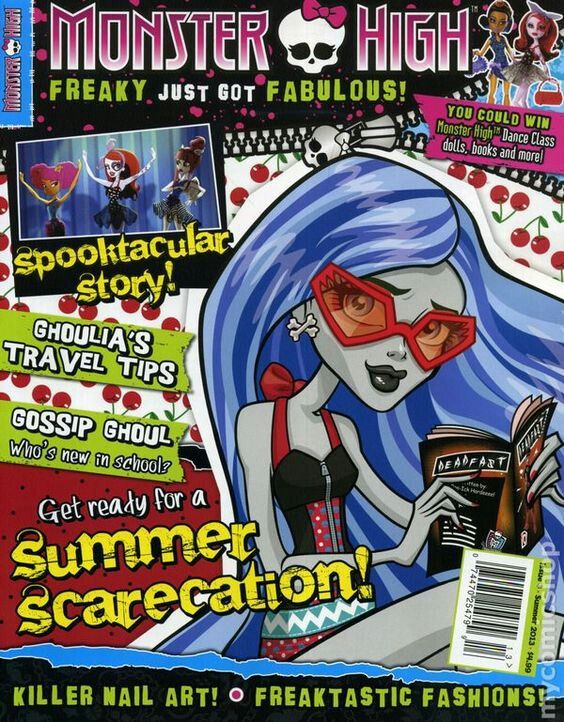
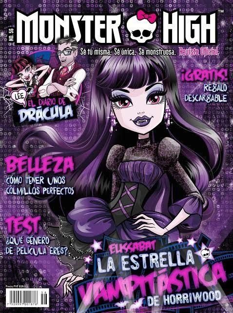
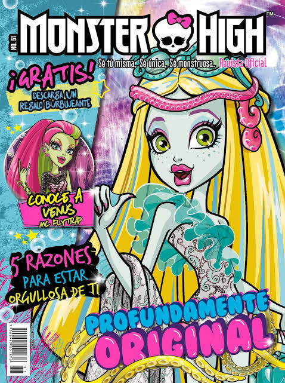
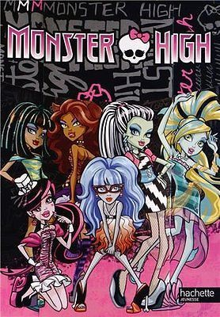
¡Luce outfits tan glamouurosos que están para morirse!
¡Bienvenido al clóset del instituto! Ve a tus estudiantes favoritas y experimenta probando sus conjuntos más icónicos. Haz clic en los botones neón para cargar sus estilos monstruosos y revelar sus diarios íntimos góticos.


Me encanta contrastar el negro atrevido con el rosa alegre! ¡Si te ves bien, te sientes bien! Sé tú mismo, sé único, sé monstruoso.
¡El tradicional Conde tiene una hija muy rosa! Algo de miedo y algo de dulzura.


Soy una fashionista implacable y nací para diseñar. Piensa en mí como una loba con ropa chic. Para lucir hay que sufrir, y yo soy una belleza, así que no me quejo
¡Un estilo feroz, salvaje y absolutamente glamuroso!
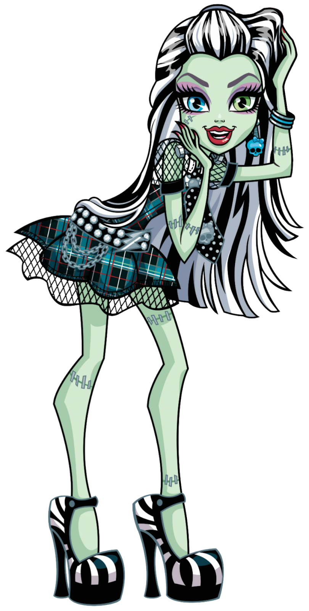
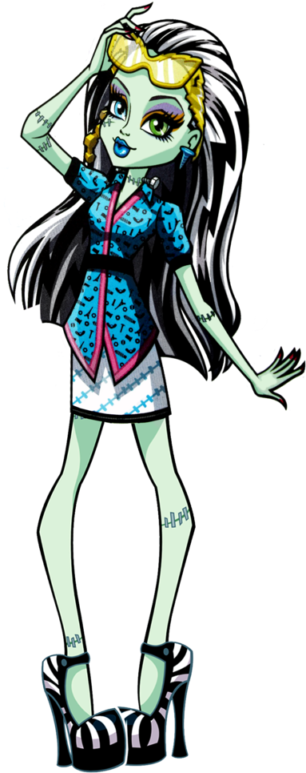
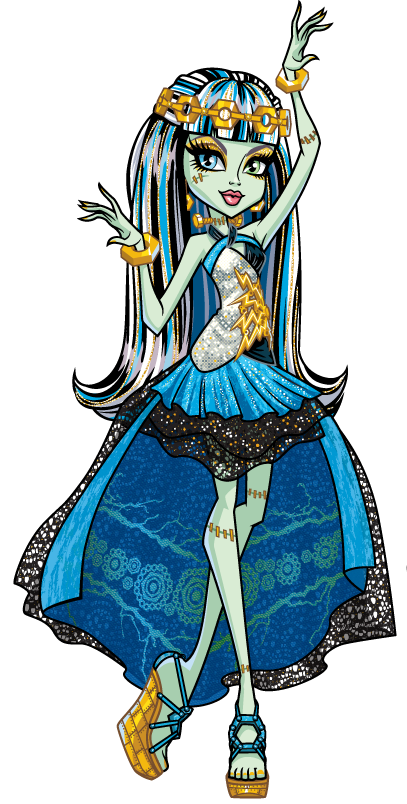
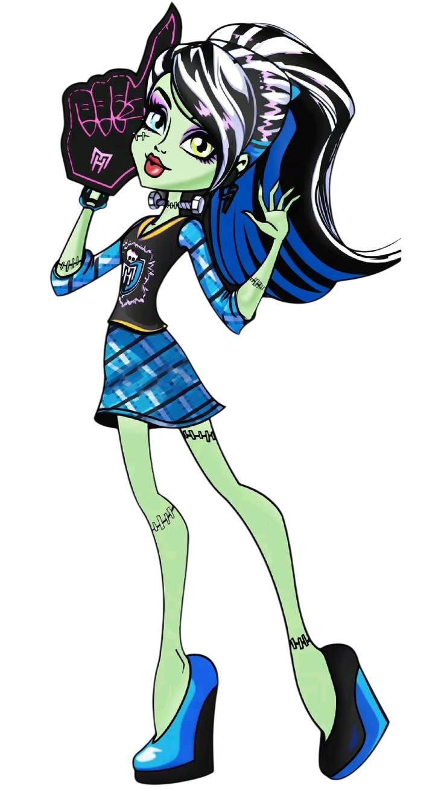
Mis amigos dicen que tengo el cuerpo perfecto para llevar la ropa más fashion. No estoy muy segura de lo que esto significa, pero me han llevado de compras y ¡hemos comprado unos modelos que están de susto!
¡Un look totalmente electrizante! Combina sus mejores costuras.
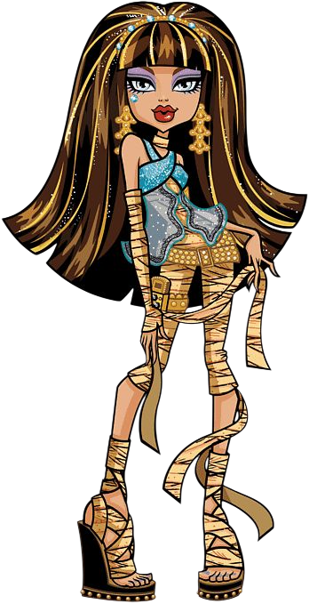
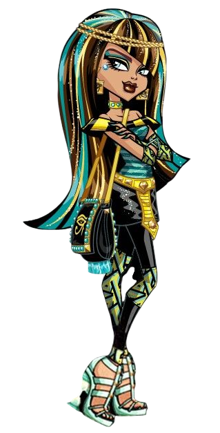
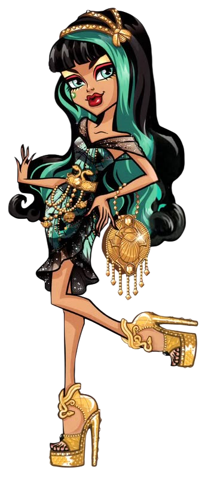
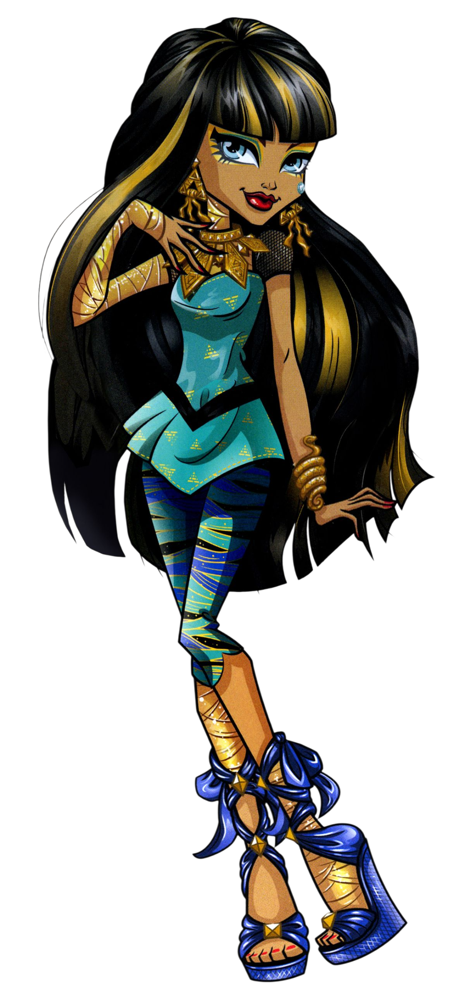
Como miembro de la realeza, es mi deber dar un ejemplo espantosamente bueno en Monster High, así que siempre llego a tiempo, lista para la clase y vestida para matar del impacto.
¡Estilo digno de la realeza egipcia! No se acepta menos que perfección.